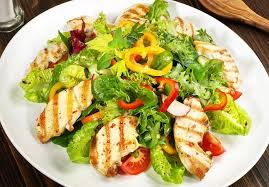

 Los Ingredientes • ½ taza de Mayonesa Hellmann’s® Light • 1 Sabrosador Continental® de Pollo • 1 diente de ajo pelado y cortado en dos • 1 limón, su jugo, su ralladura • 3 berenjenas, limpias, sin piel, cortadas en cubitos • 2 filetes de pechuga de pollo cortados en cubos, cocidos previamente • 2 tomates manzanos, limpios, cortados en gajos • 1 taza de nueces mixtas con pasas • Mix de lechugas y hojas verdes
1 Salsitas Naturas ® Receta Artesanal Bolognesa 274g 8 mini pan árabe 1 taza de rebanadas de pepperoni 2 tazas de queso mozzarella rallado
½ frasco de salsa Natura’s® Receta Artesanal tipo Bolognesa 1 sabrosador Continental® de pollo 1 cucharada de margarina Mirasol® 4 huevos 1/2 cebolla picada fina ½ chile verde picado fino 2 dientes de ajo finamente picados Pizca de pimienta
S1 salsa Natura`s® Receta Artesanal Tradicional 1 sabrosador continental® de pollo 2 cucharadas de margarina Mirasol® 10 tortillas de trigo 5 chorizos sofritos y desmenuzados 2 y ½ taza de mix de quesos taqueros ½ cebolla picada finamente sofrita 2 dientes de ajo finamente picados 1 cucharada de perejil finamente picado Pizca de pimienta